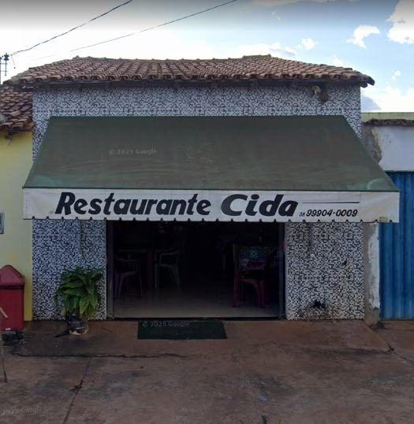
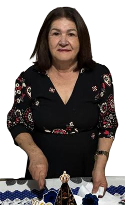

Nossa História

O restaurante Dona Cida começou com o apoio de um amigo e hoje é mais do que um negócio, a jornada da proprietária começou na portaria de uma das escolas do município de Fruta de Leite, e que após a aposentadoria decidiu inovar e começar um novo negócio. O que vemos hoje é fruto da força e perseverança, com a missão de servir e proporcionar conforto e aconchego através da culinária.
